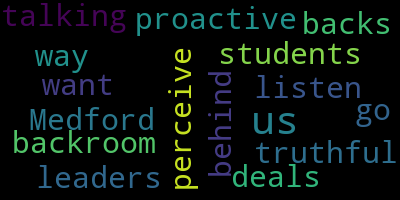
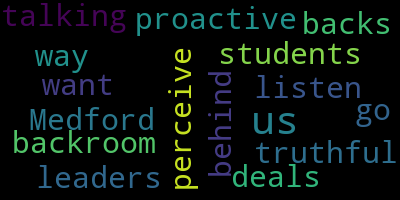

total time: 0.36 minutes
total words: 56
{kind=link}
total time: 0.23 minutes
total words: 37

{kind=link}
total time: 0.11 minutes
total words: 15

[Reporter]: A standing ovation of gratitude for embattled Superintendent Roy Belson. The 50 year veteran educator will retire on April 30th, two months early after waiting two months to tell police and parents about a loaded gun magazine found in a middle school auditorium.
[Belson]: Want to begin by apologizing to everyone for any disruption that my actions may have caused. There are people in the community who obviously were concerned, and so I respect that. There's a certain element of people that have certain political agendas, and I understand that. But we'll move forward, and in time, everything will heal.
[Reporter]: Frustrations boiled over last Thursday at a community meeting. Parents livid that safety protocols weren't followed. Tonight, students demanded a voice in their own safety.
[Tseng]: We want our leaders to be proactive and to listen to us. and to be truthful to us and not to go about what students perceive as the Medford way, backroom deals and talking behind our backs.
[Reporter]: And the school committee has green-lighted other protocols to make schools safer.
[Burke]: We will move forward on ALICE training. We will establish a school safety advisory committee.
[Reporter]: And another school policy that takes effect immediately, anyone who finds any item on school grounds that could potentially pose a safety risk must call and report that immediately to police. We're live in Medford tonight. I'm Mary Saladna, WCVB News Center 5.
|
total time: 0.36 minutes total words: 56 |
total time: 0.23 minutes total words: 37  |
total time: 0.11 minutes total words: 15 |
|